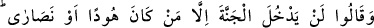
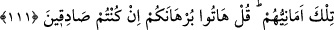
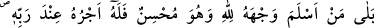
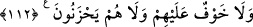
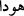

111. (Ehl-i kitap:) Yahûdîler yahut hıristiyanlar hâriç hiç kimse cennete
giremeyecek, dediler. Bu onların kuruntusudur. Sen de onlara: Eğer gerçekten
doğru söylüyorsanız delîlinizi getirin, de.
Âyet, hıristiyan Necran heyeti hakkında nâzil olmuştur. Bunlar Rasûlullah’ın
meclisinde yahûdîlerle bir araya gelmişler ve cennete girip girmeme konusunda
birbirlerini yalanlamışlardı. Yahûdîler Necranlılar’a: “Cennete ancak yahûdîler
girecek.” derken, Necranlılar da: “Cennete ancak hıristiyanlar girecek.” diyorlardı.
Âyette geçen yahûdî anlamındaki (  ) kelimesi ( ) kelimesinin cem’i olup, “tâib”
gibi, tevbe edenler anlamına gelmektedir. Sanki bu isim, bir tür medh olup, onlardan
buzağıya ibâdeti terkedenler için kullanılmıştır. Şerîatleri neshedildikten sonra da
kendileri için özel isim olarak kalmıştır. “Nasârâ” kelimesi de yardımcı anlamına
gelen “Nasrân”ın çoğuludur.
Onların “Cennete yahûdî ve hıristiyanlar dışında kimsenin girmeyeceğine” dâir
sözleri bir kuruntudan ibârettir. Yâni haksız yere Allah’dan temennî ettikleri kötü
arzulardır sâdece. “Kuruntular” olarak terceme edilen “emânî” kelimesi “ümniyye”
kelimesinin çoğuludur. Ümniyye de istenilen, arzu edilen şey demektir. Araplar delîle
dayanmayan söze temennî, gurûr (aldanma), dalâl (sapıklık) ve ahlâm (rüyâ) derler.
Allah âyetin devamında onların Rasûlullah’a söylediklerinin bâtıl olduğunu îmâ
ederek: “eğer iddiânızda doğru kimseler iseniz” cennete sâdece sizin gireceğinize dâir
olan: “burhânınızı getirin.” buyuruyor. Çünkü delîle dayanmayan hiçbir söz sâbit
değildir.
112. Bilâkis, kim muhsin olarak yüzünü Allah’a döndürürse (Allah’a hakkıyla
kulluk ederse) onun ecri Rabbi katındadır. Öyleleri için ne bir korku vardır, ne de
üzüntü çekerler.
“Kim yüzünü Allah’a teslim ederse” demek; yaratma, mülkiyet, tâzim ve ibâdete
liyâkat bakımından nefsini Allah’dan başka hiçbir varlığa hasretmezse, demektir. Âyette
nefs mânâsı, yüz anlamına gelen “vech” kelimesiyle ifâde edilmiştir. Çünkü yüz, duyu
organlarının, düşüncenin ve hayâlin merkezi olması hasebiyle organların en şereflisidir.
“Cüz”ün zikredilip “küll”ün murâd edilmesi bâbında mecâz bir ifâdedir. Nitekim
“Allah onu mükerrem kılsın” anlamında: “kerremallahu vecheh” denilir. Âyetin: